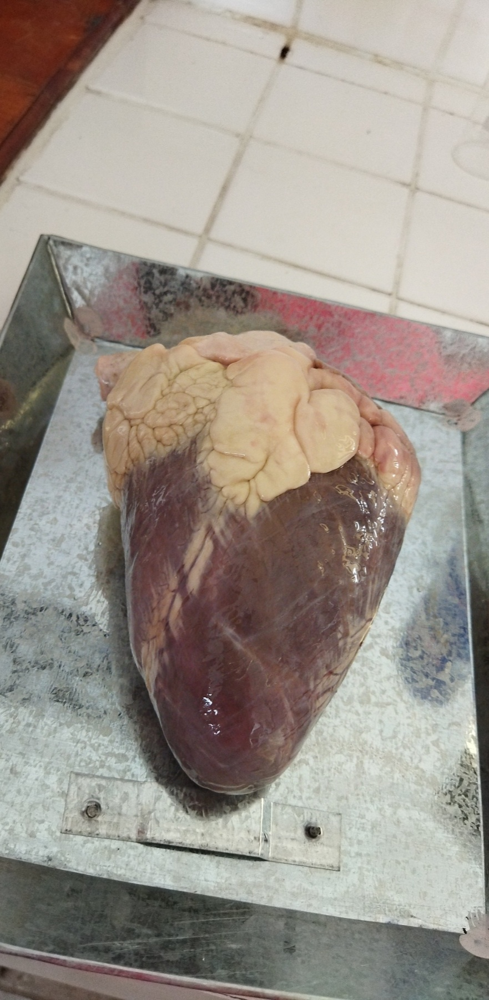

Upon godha's donation of egyption cow hearts, we were able to mess around and dissect one for our own. It is currently suspended in some liquid in the lab, but the cutting process was very fun we got to see how the heart diagrams look in 3D!!